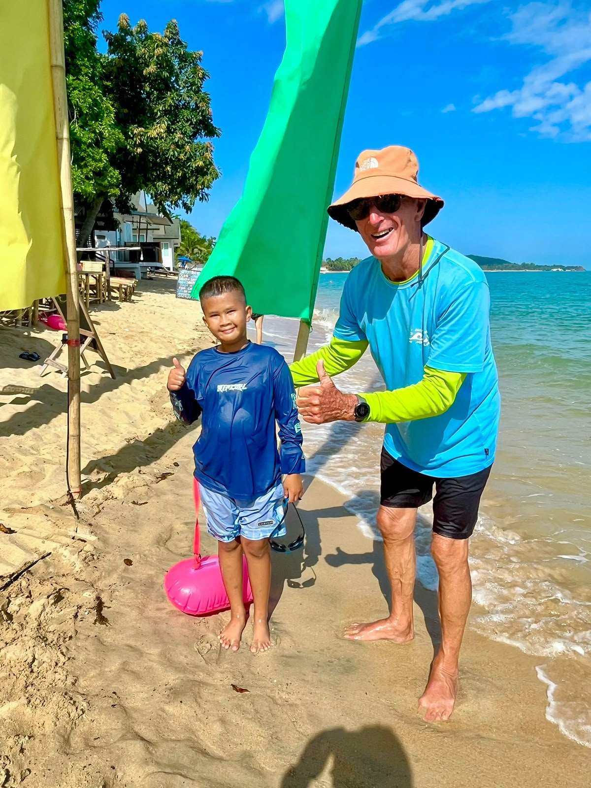
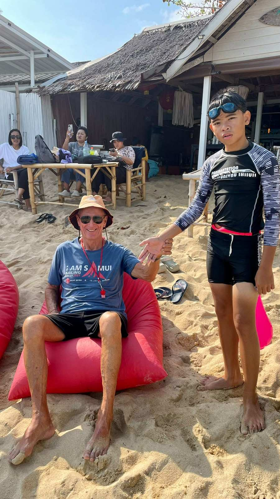
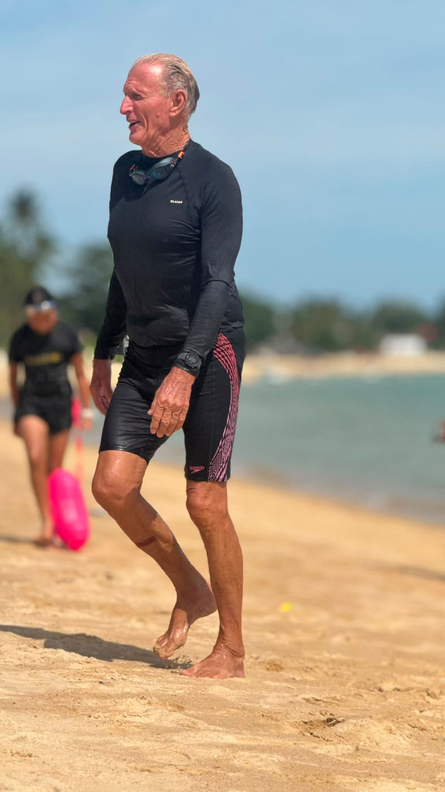
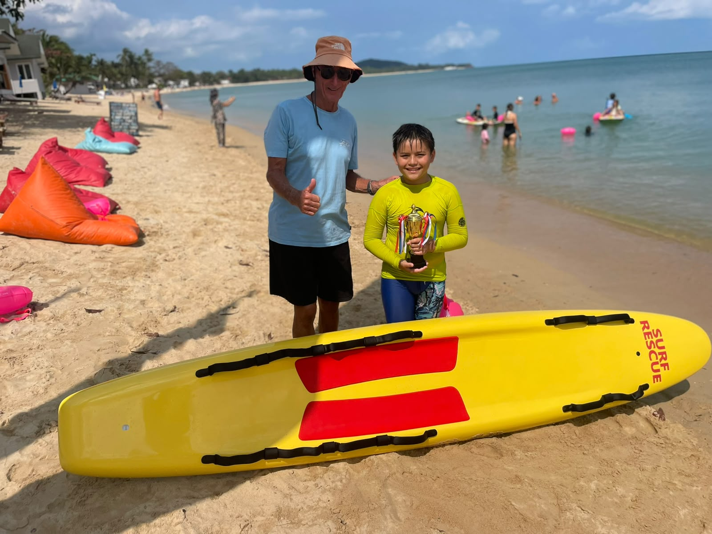

Gary
Gary in action with the Surf Club community.

What can we say about Gary?
Gary is the volunteer swimming extraordinaire of Koh Samui. A familiar face in the island's swimming community, he is perhaps best known for his incredible swim from Koh Phangan to Koh Samui and, more importantly, for the hundreds of children he has taught through the Rotary Swim for Life program.
Many of the children who are now coming through the Koh Samui Surf Lifesaving Club first learned their swimming skills through the Swim for Life program, where Gary played an integral role from the beginning. His passion for teaching children to swim and giving them the confidence to be safe in the water has been a huge part of the foundation on which our club has been built.
The idea for a surf lifesaving club was Gary's brainchild. Even before COVID, he was walking the beaches of Koh Samui looking for the right location where he could establish a regular ocean swimming program for local children. Despite not finding the right venue at the time, Gary never lost sight of the idea.
That vision eventually became the Koh Samui Surf Lifesaving Club.
Today, Gary is there every Sunday, getting in the water, teaching the kids, encouraging them and helping them develop the skills they need to become confident and safe in the ocean.
For many of the children, Gary is much more than a swimming instructor. He has become the face and the father figure of the Koh Samui Surf Lifesaving Club - someone the kids look up to, trust and love being around.
Without Gary's passion, persistence and belief in the idea, the club may never have existed. His contribution is at the very heart of everything we are building.


